Graphing with ggplot2
Kelly McConville
Stat 100
Week 3 | Fall 2023
Announcements
- With COVID working its way through campus right now, make sure to check the Sections spreadsheet and the Office hours spreadsheet for updates!
- Grab a postcard and/or a stamp from SC 316 if you lost yours.
- We also have markers, colored pencils, and crayons!
- Don’t forget that P-Set 1 due on Tuesday by 5pm in Gradescope.
- Come by office hours with any questions.
Goals for Today
- Come back to the general structure of
ggplot2. - Learn a few standard graphs for numerical/quantitative data:
- Histogram: one numerical variable
- Side-by-side boxplot: one numerical variable and one categorical variable
- Side-by-side violin plot: one numerical variable and one categorical variable
- Scatterplot: two numerical variables
- Linegraph: two numerical variables
- And, learn the standard graphic for categorical data:
- Barplot: one categorical variable
- Segmented barplot: two categorical variables
- Also cover some common extensions and customizations.
Load Necessary Packages

ggplot2 is part of this collection of data science packages.
Data Setting: Eco-Totem Broadway Bicycle Count
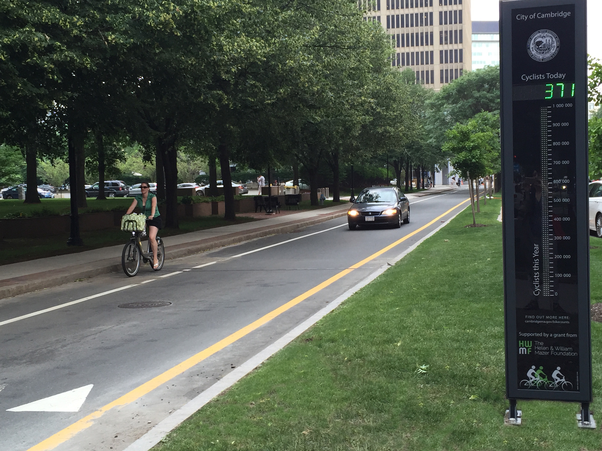

Import the Data
Rows: 192
Columns: 8
$ DateTime <chr> "07/04/2019 12:00:00 AM", "07/04/2019 12:15:00 AM", "07/04/2…
$ Day <chr> "Thursday", "Thursday", "Thursday", "Thursday", "Thursday", …
$ Date <date> 2019-07-04, 2019-07-04, 2019-07-04, 2019-07-04, 2019-07-04,…
$ Time <time> 00:00:00, 00:15:00, 00:30:00, 00:45:00, 01:00:00, 01:15:00,…
$ Total <dbl> 2, 3, 2, 0, 3, 2, 1, 0, 0, 0, 0, 0, 1, 1, 0, 0, 0, 0, 1, 1, …
$ Westbound <dbl> 2, 3, 1, 0, 2, 2, 1, 0, 0, 0, 0, 0, 1, 1, 0, 0, 0, 0, 0, 1, …
$ Eastbound <dbl> 0, 0, 1, 0, 1, 0, 0, 0, 0, 0, 0, 0, 0, 0, 0, 0, 0, 0, 1, 0, …
$ Occasion <chr> "Fourth of July", "Fourth of July", "Fourth of July", "Fourt…ggplot2 example code
Guiding Principle: We will map variables from the data to the aesthetic attributes (e.g. location, size, shape, color) of geometric objects (e.g. points, lines, bars).
There are other layers, such as scales_---_---() and labs(), but we will wait on those.
Histograms
Histograms
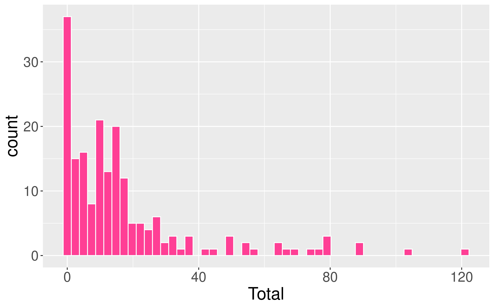
- mapping to a variable goes in
aes() - setting to a specific value goes in the
geom_---()
Boxplots
- Five number summary:
- Minimum
- First quartile (Q1)
- Median
- Third quartile (Q3)
- Maximum
- Interquartile range (IQR) \(=\) Q3 \(-\) Q1
- Outliers: unusual points
- Boxplot defines unusual as being beyond \(1.5*IQR\) from \(Q1\) or \(Q3\).
- Whiskers: reach out to the furthest point that is NOT an outlier
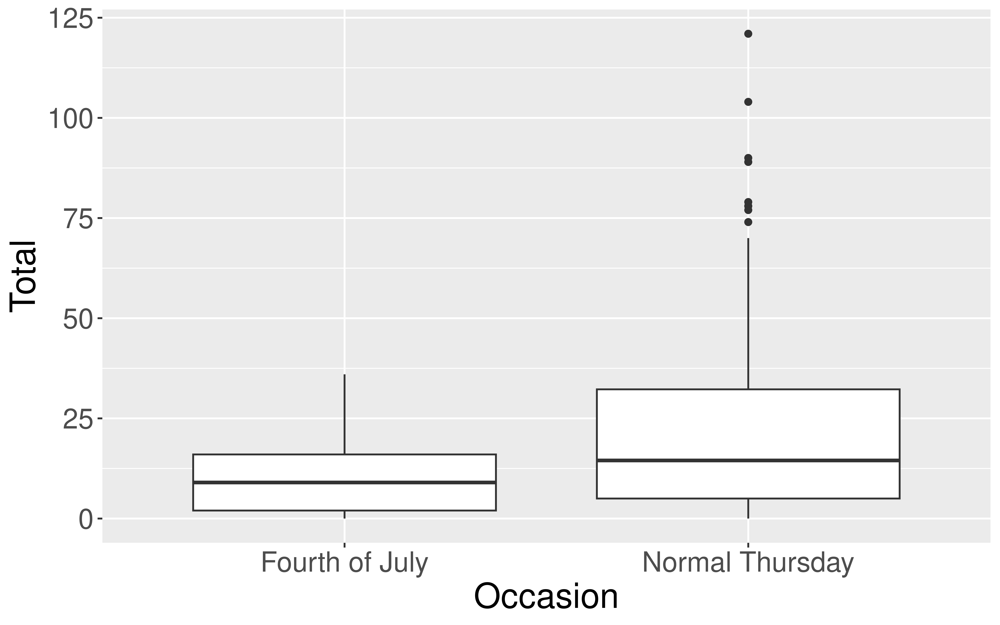
Boxplots
Boxplots
Boxplots
Boxplots

Violin Plots
Boxplot Versus Violin Plots
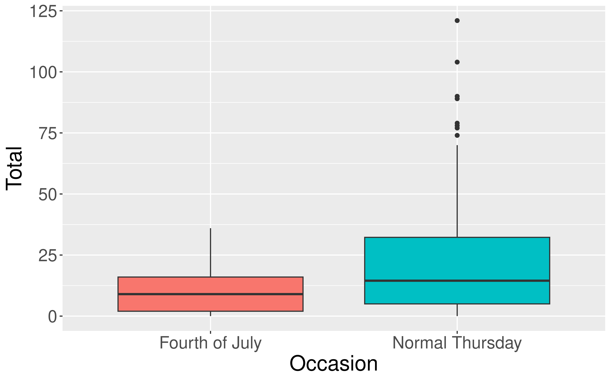
Scatterplots
- Explore relationships between numerical variables.
- We will be especially interested in linear relationships.
Scatterplots
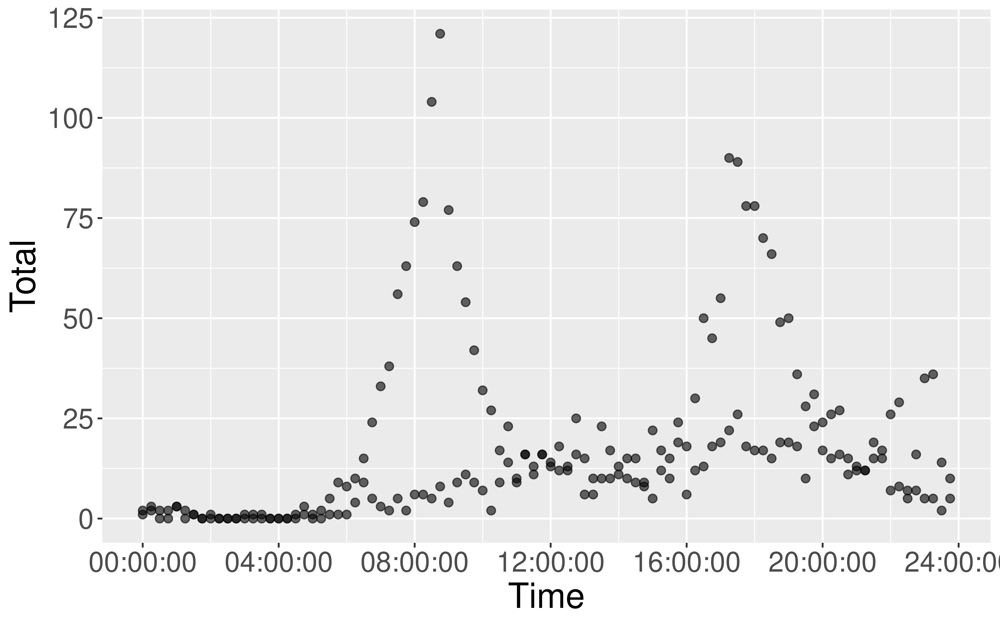
- Fix over-plotting
- Why the weird pattern??
Scatterplots
Linegraphs
Also called time series plot when time is represented on the x axis.
Linegraphs
Also called time series plot when time is represented on the x axis.
New Data Setting: Dog Names in Cambridge, MA
Based on dog license data collected by Cambridge’s Animal Commission
# Import and inspect data
dogs <- read_csv("https://data.cambridgema.gov/api/views/sckh-3xyx/rows.csv")
glimpse(dogs)Rows: 3,942
Columns: 6
$ Dog_Name <chr> "Butch", "Baxter", "Bodhi", "Ocean", "Coco", "Brio", …
$ Dog_Breed <chr> "Mixed Breed", "Mixed Breed", "Golden Retriever", "Pu…
$ Location_masked <chr> "POINT (-71.1328 42.3989)", "POINT (-71.1186 42.3814)…
$ Latitude_masked <dbl> 42.3989, 42.3814, 42.3998, 42.3726, 42.3610, 42.3892,…
$ Longitude_masked <dbl> -71.1328, -71.1186, -71.1308, -71.1087, -71.1022, -71…
$ Neighborhood <chr> "North Cambridge", "Neighborhood Nine", "North Cambri…Data Wrangling
We haven’t learned this topic yet.
I only included this code for completeness/transparency.
# Create a column for Breed
dogs <- mutate(dogs, Breed = if_else(
Dog_Breed == "Mixed Breed",
"Mixed", "Single"))
# Find the 5 top most common names
top5names <- count(dogs, Dog_Name) %>%
slice_max(n = 5, order_by = n) %>%
select(Dog_Name) %>%
pull()
# Filter dataset to only the 5 top most common names
dogs_top5 <- filter(dogs,
Dog_Name %in% top5names)Before we graph the data, do we have any guesses on popular dog names?
Barplots
Displays the frequency for each category.
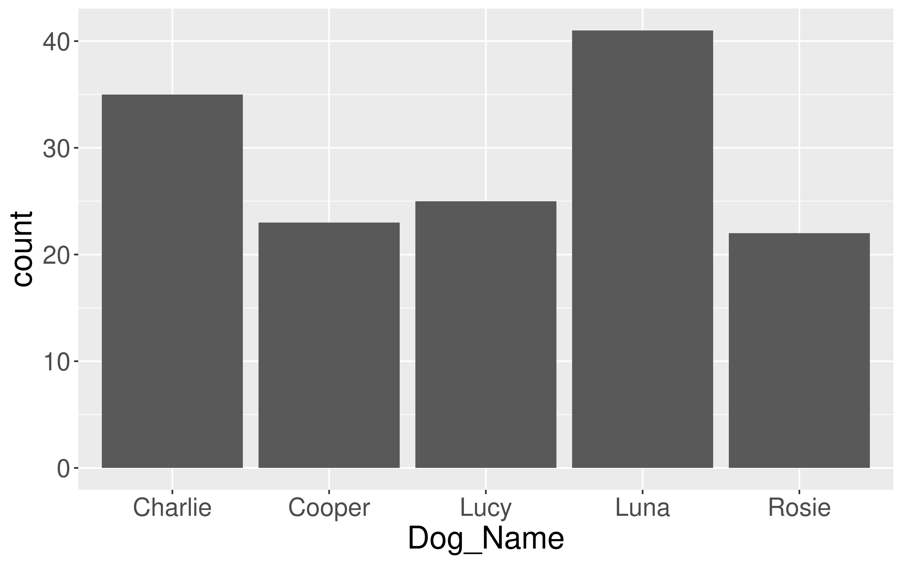
Barplots
How could we make this graph better?
Barplots
Segmented Barplots
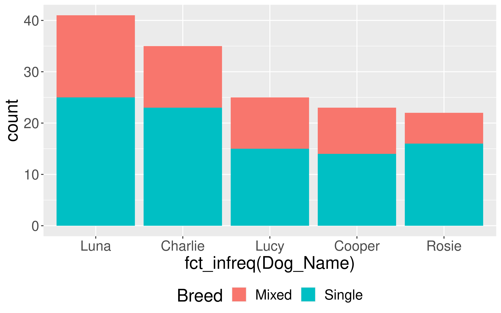
Each bar is divided into the frequencies of the
fillvariable.Hard to make comparisons across categories.
Segmented Barplots
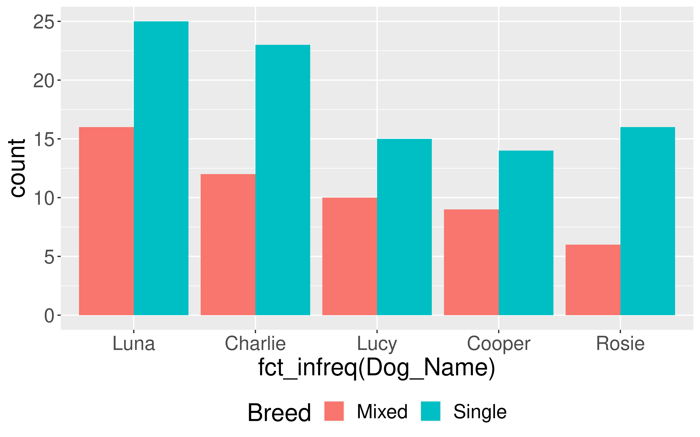
- Can add the
positionargument into thegeom_bar().
Segmented Barplots
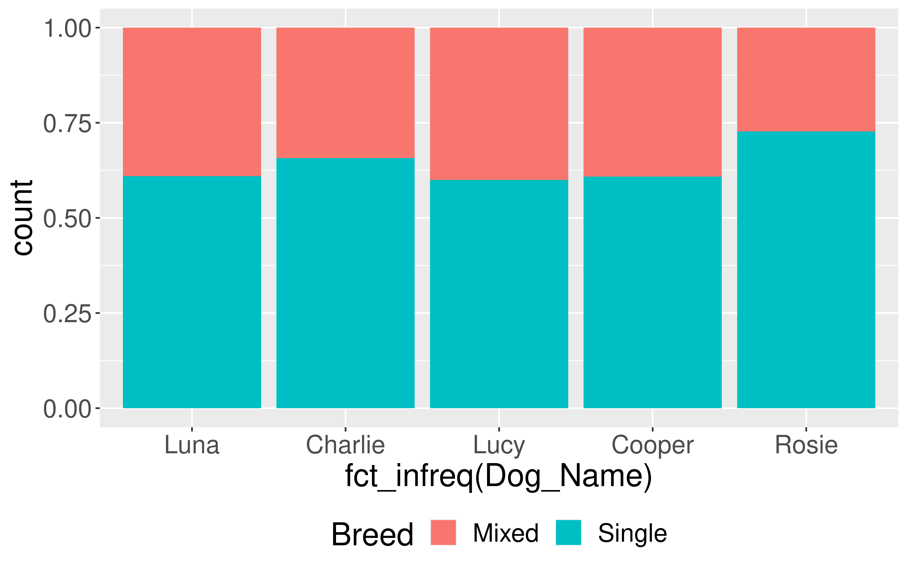
- Now each bar is divided into proportions based on the
fillvariable.
Adding More Variables
- Two main approaches:
- Utilize other
aesthetics of thegeom - Facet: Create multiple plots across the categories of a categorical variable.
- Utilize other
Utilize other aesthetics
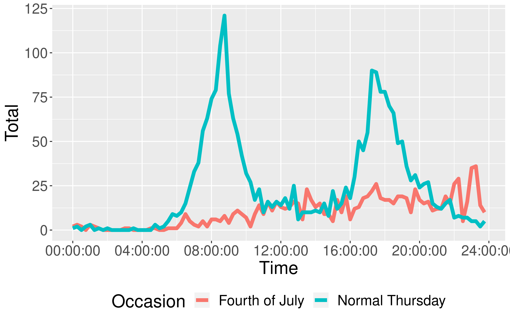
- Already saw how to add a third variable to a line graph (and a scatterplot) via
color.- Can also change size or type.
Facet
Facet
Consider Doing Both!
Adding Some Context
ggplot(data = july_2019,
mapping = aes(x = Time,
y = Total,
color = Occasion)) +
geom_line(size = 2) +
theme(legend.pos = "bottom") +
labs(x = "Time of Day",
y = "Number of Passes",
color = "What Type of Day?",
caption = "Data Collected by Eco-Totem",
title = "Cycling Patterns at Broadway Bike Counter")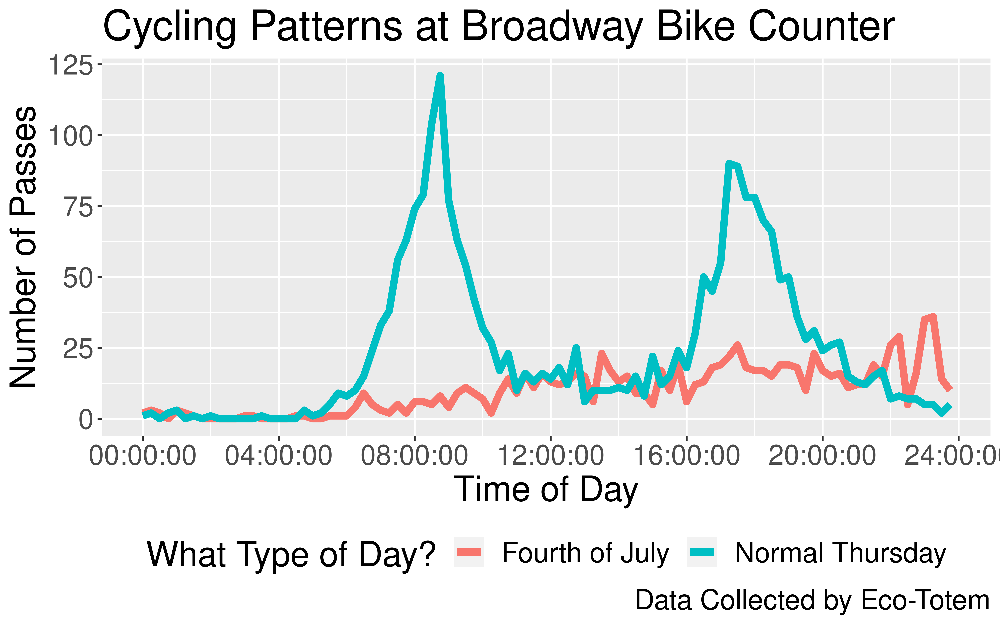
Customizing your ggplot2 Plots
There are so many ways you can customize the look of your
ggplot2plots.Let’s look at some common changes:
- Fussing with labels
- Zooming in
- Using multiple
geoms - Color!
- Themes
Fussing with Labels: Rotate
Zooming In

Zooming In
Multiple geoms
Multiple geoms
Change the Color
[1] "white" "aliceblue" "antiquewhite"
[4] "antiquewhite1" "antiquewhite2" "antiquewhite3"
[7] "antiquewhite4" "aquamarine" "aquamarine1"
[10] "aquamarine2" "aquamarine3" "aquamarine4"
[13] "azure" "azure1" "azure2"
[16] "azure3" "azure4" "beige"
[19] "bisque" "bisque1" "bisque2"
[22] "bisque3" "bisque4" "black"
[25] "blanchedalmond" "blue" "blue1"
[28] "blue2" "blue3" "blue4"
[31] "blueviolet" "brown" "brown1"
[34] "brown2" "brown3" "brown4"
[37] "burlywood" "burlywood1" "burlywood2"
[40] "burlywood3" "burlywood4" "cadetblue"
[43] "cadetblue1" "cadetblue2" "cadetblue3"
[46] "cadetblue4" "chartreuse" "chartreuse1"
[49] "chartreuse2" "chartreuse3" "chartreuse4"
[52] "chocolate" "chocolate1" "chocolate2"
[55] "chocolate3" "chocolate4" "coral"
[58] "coral1" "coral2" "coral3"
[61] "coral4" "cornflowerblue" "cornsilk"
[64] "cornsilk1" "cornsilk2" "cornsilk3"
[67] "cornsilk4" "cyan" "cyan1"
[70] "cyan2" "cyan3" "cyan4"
[73] "darkblue" "darkcyan" "darkgoldenrod"
[76] "darkgoldenrod1" "darkgoldenrod2" "darkgoldenrod3"
[79] "darkgoldenrod4" "darkgray" "darkgreen"
[82] "darkgrey" "darkkhaki" "darkmagenta"
[85] "darkolivegreen" "darkolivegreen1" "darkolivegreen2"
[88] "darkolivegreen3" "darkolivegreen4" "darkorange"
[91] "darkorange1" "darkorange2" "darkorange3"
[94] "darkorange4" "darkorchid" "darkorchid1"
[97] "darkorchid2" "darkorchid3" "darkorchid4"
[100] "darkred" "darksalmon" "darkseagreen"
[103] "darkseagreen1" "darkseagreen2" "darkseagreen3"
[106] "darkseagreen4" "darkslateblue" "darkslategray"
[109] "darkslategray1" "darkslategray2" "darkslategray3"
[112] "darkslategray4" "darkslategrey" "darkturquoise"
[115] "darkviolet" "deeppink" "deeppink1"
[118] "deeppink2" "deeppink3" "deeppink4"
[121] "deepskyblue" "deepskyblue1" "deepskyblue2"
[124] "deepskyblue3" "deepskyblue4" "dimgray"
[127] "dimgrey" "dodgerblue" "dodgerblue1"
[130] "dodgerblue2" "dodgerblue3" "dodgerblue4"
[133] "firebrick" "firebrick1" "firebrick2"
[136] "firebrick3" "firebrick4" "floralwhite"
[139] "forestgreen" "gainsboro" "ghostwhite"
[142] "gold" "gold1" "gold2"
[145] "gold3" "gold4" "goldenrod"
[148] "goldenrod1" "goldenrod2" "goldenrod3"
[151] "goldenrod4" "gray" "gray0"
[154] "gray1" "gray2" "gray3"
[157] "gray4" "gray5" "gray6"
[160] "gray7" "gray8" "gray9"
[163] "gray10" "gray11" "gray12"
[166] "gray13" "gray14" "gray15"
[169] "gray16" "gray17" "gray18"
[172] "gray19" "gray20" "gray21"
[175] "gray22" "gray23" "gray24"
[178] "gray25" "gray26" "gray27"
[181] "gray28" "gray29" "gray30"
[184] "gray31" "gray32" "gray33"
[187] "gray34" "gray35" "gray36"
[190] "gray37" "gray38" "gray39"
[193] "gray40" "gray41" "gray42"
[196] "gray43" "gray44" "gray45"
[199] "gray46" "gray47" "gray48"
[202] "gray49" "gray50" "gray51"
[205] "gray52" "gray53" "gray54"
[208] "gray55" "gray56" "gray57"
[211] "gray58" "gray59" "gray60"
[214] "gray61" "gray62" "gray63"
[217] "gray64" "gray65" "gray66"
[220] "gray67" "gray68" "gray69"
[223] "gray70" "gray71" "gray72"
[226] "gray73" "gray74" "gray75"
[229] "gray76" "gray77" "gray78"
[232] "gray79" "gray80" "gray81"
[235] "gray82" "gray83" "gray84"
[238] "gray85" "gray86" "gray87"
[241] "gray88" "gray89" "gray90"
[244] "gray91" "gray92" "gray93"
[247] "gray94" "gray95" "gray96"
[250] "gray97" "gray98" "gray99"
[253] "gray100" "green" "green1"
[256] "green2" "green3" "green4"
[259] "greenyellow" "grey" "grey0"
[262] "grey1" "grey2" "grey3"
[265] "grey4" "grey5" "grey6"
[268] "grey7" "grey8" "grey9"
[271] "grey10" "grey11" "grey12"
[274] "grey13" "grey14" "grey15"
[277] "grey16" "grey17" "grey18"
[280] "grey19" "grey20" "grey21"
[283] "grey22" "grey23" "grey24"
[286] "grey25" "grey26" "grey27"
[289] "grey28" "grey29" "grey30"
[292] "grey31" "grey32" "grey33"
[295] "grey34" "grey35" "grey36"
[298] "grey37" "grey38" "grey39"
[301] "grey40" "grey41" "grey42"
[304] "grey43" "grey44" "grey45"
[307] "grey46" "grey47" "grey48"
[310] "grey49" "grey50" "grey51"
[313] "grey52" "grey53" "grey54"
[316] "grey55" "grey56" "grey57"
[319] "grey58" "grey59" "grey60"
[322] "grey61" "grey62" "grey63"
[325] "grey64" "grey65" "grey66"
[328] "grey67" "grey68" "grey69"
[331] "grey70" "grey71" "grey72"
[334] "grey73" "grey74" "grey75"
[337] "grey76" "grey77" "grey78"
[340] "grey79" "grey80" "grey81"
[343] "grey82" "grey83" "grey84"
[346] "grey85" "grey86" "grey87"
[349] "grey88" "grey89" "grey90"
[352] "grey91" "grey92" "grey93"
[355] "grey94" "grey95" "grey96"
[358] "grey97" "grey98" "grey99"
[361] "grey100" "honeydew" "honeydew1"
[364] "honeydew2" "honeydew3" "honeydew4"
[367] "hotpink" "hotpink1" "hotpink2"
[370] "hotpink3" "hotpink4" "indianred"
[373] "indianred1" "indianred2" "indianred3"
[376] "indianred4" "ivory" "ivory1"
[379] "ivory2" "ivory3" "ivory4"
[382] "khaki" "khaki1" "khaki2"
[385] "khaki3" "khaki4" "lavender"
[388] "lavenderblush" "lavenderblush1" "lavenderblush2"
[391] "lavenderblush3" "lavenderblush4" "lawngreen"
[394] "lemonchiffon" "lemonchiffon1" "lemonchiffon2"
[397] "lemonchiffon3" "lemonchiffon4" "lightblue"
[400] "lightblue1" "lightblue2" "lightblue3"
[403] "lightblue4" "lightcoral" "lightcyan"
[406] "lightcyan1" "lightcyan2" "lightcyan3"
[409] "lightcyan4" "lightgoldenrod" "lightgoldenrod1"
[412] "lightgoldenrod2" "lightgoldenrod3" "lightgoldenrod4"
[415] "lightgoldenrodyellow" "lightgray" "lightgreen"
[418] "lightgrey" "lightpink" "lightpink1"
[421] "lightpink2" "lightpink3" "lightpink4"
[424] "lightsalmon" "lightsalmon1" "lightsalmon2"
[427] "lightsalmon3" "lightsalmon4" "lightseagreen"
[430] "lightskyblue" "lightskyblue1" "lightskyblue2"
[433] "lightskyblue3" "lightskyblue4" "lightslateblue"
[436] "lightslategray" "lightslategrey" "lightsteelblue"
[439] "lightsteelblue1" "lightsteelblue2" "lightsteelblue3"
[442] "lightsteelblue4" "lightyellow" "lightyellow1"
[445] "lightyellow2" "lightyellow3" "lightyellow4"
[448] "limegreen" "linen" "magenta"
[451] "magenta1" "magenta2" "magenta3"
[454] "magenta4" "maroon" "maroon1"
[457] "maroon2" "maroon3" "maroon4"
[460] "mediumaquamarine" "mediumblue" "mediumorchid"
[463] "mediumorchid1" "mediumorchid2" "mediumorchid3"
[466] "mediumorchid4" "mediumpurple" "mediumpurple1"
[469] "mediumpurple2" "mediumpurple3" "mediumpurple4"
[472] "mediumseagreen" "mediumslateblue" "mediumspringgreen"
[475] "mediumturquoise" "mediumvioletred" "midnightblue"
[478] "mintcream" "mistyrose" "mistyrose1"
[481] "mistyrose2" "mistyrose3" "mistyrose4"
[484] "moccasin" "navajowhite" "navajowhite1"
[487] "navajowhite2" "navajowhite3" "navajowhite4"
[490] "navy" "navyblue" "oldlace"
[493] "olivedrab" "olivedrab1" "olivedrab2"
[496] "olivedrab3" "olivedrab4" "orange"
[499] "orange1" "orange2" "orange3"
[502] "orange4" "orangered" "orangered1"
[505] "orangered2" "orangered3" "orangered4"
[508] "orchid" "orchid1" "orchid2"
[511] "orchid3" "orchid4" "palegoldenrod"
[514] "palegreen" "palegreen1" "palegreen2"
[517] "palegreen3" "palegreen4" "paleturquoise"
[520] "paleturquoise1" "paleturquoise2" "paleturquoise3"
[523] "paleturquoise4" "palevioletred" "palevioletred1"
[526] "palevioletred2" "palevioletred3" "palevioletred4"
[529] "papayawhip" "peachpuff" "peachpuff1"
[532] "peachpuff2" "peachpuff3" "peachpuff4"
[535] "peru" "pink" "pink1"
[538] "pink2" "pink3" "pink4"
[541] "plum" "plum1" "plum2"
[544] "plum3" "plum4" "powderblue"
[547] "purple" "purple1" "purple2"
[550] "purple3" "purple4" "red"
[553] "red1" "red2" "red3"
[556] "red4" "rosybrown" "rosybrown1"
[559] "rosybrown2" "rosybrown3" "rosybrown4"
[562] "royalblue" "royalblue1" "royalblue2"
[565] "royalblue3" "royalblue4" "saddlebrown"
[568] "salmon" "salmon1" "salmon2"
[571] "salmon3" "salmon4" "sandybrown"
[574] "seagreen" "seagreen1" "seagreen2"
[577] "seagreen3" "seagreen4" "seashell"
[580] "seashell1" "seashell2" "seashell3"
[583] "seashell4" "sienna" "sienna1"
[586] "sienna2" "sienna3" "sienna4"
[589] "skyblue" "skyblue1" "skyblue2"
[592] "skyblue3" "skyblue4" "slateblue"
[595] "slateblue1" "slateblue2" "slateblue3"
[598] "slateblue4" "slategray" "slategray1"
[601] "slategray2" "slategray3" "slategray4"
[604] "slategrey" "snow" "snow1"
[607] "snow2" "snow3" "snow4"
[610] "springgreen" "springgreen1" "springgreen2"
[613] "springgreen3" "springgreen4" "steelblue"
[616] "steelblue1" "steelblue2" "steelblue3"
[619] "steelblue4" "tan" "tan1"
[622] "tan2" "tan3" "tan4"
[625] "thistle" "thistle1" "thistle2"
[628] "thistle3" "thistle4" "tomato"
[631] "tomato1" "tomato2" "tomato3"
[634] "tomato4" "turquoise" "turquoise1"
[637] "turquoise2" "turquoise3" "turquoise4"
[640] "violet" "violetred" "violetred1"
[643] "violetred2" "violetred3" "violetred4"
[646] "wheat" "wheat1" "wheat2"
[649] "wheat3" "wheat4" "whitesmoke"
[652] "yellow" "yellow1" "yellow2"
[655] "yellow3" "yellow4" "yellowgreen" Change the Color
Change the Color
Use a Different Theme
What ggplot2 questions do we have?
Reminders
- With COVID working its way through campus right now, make sure to check the Sections spreadsheet and the Office hours spreadsheet for updates!
- Grab a postcard and/or a stamp from SC 316 if you lost yours.
- We also have markers, colored pencils, and crayons!
- Don’t forget that P-Set 1 due on Tuesday by 5pm in Gradescope.
- Come by office hours with any questions.